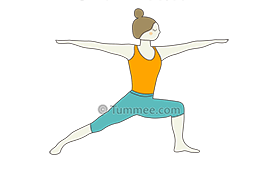

Starting Position:
Begin in a standing position at the top of your mat, with your feet together and arms at your sides.
Step Back:
Take a step back with your right foot, keeping your left foot forward. The distance between your feet should be about the length of one of your own leg.
Foot Alignment:
Turn your right foot to a 45-degree angle, so the outer edge of your right foot is parallel with the back edge of your mat. Your left foot should be pointing directly forward
.
Hip Alignment:
Square your hips to the front of the mat. This may require some adjustment of your back foot to achieve proper alignment.
Bend the Front Knee:
Bend your left knee, bringing it directly over your left ankle. Aim for a 90-degree angle in the left knee, but make sure it feels comfortable and does not go past your ankle.
Leg Position:
Ground down through the outer edge of your back foot, pressing it firmly into the mat. Your back leg should be straight, with a slight external rotation.
Torso Upright:
Lift your torso upright and extend your arms overhead, bringing your palms together in a prayer position (Anjali Mudra). Your arms can be parallel or slightly separated, depending on your shoulder flexibility.
Gaze:
Look forward or slightly upward, keeping your neck in a neutral position.
Shoulder Position:
Relax your shoulders away from your ears and engage your core muscles to stabilize your torso.
Hold the Pose:
Hold Warrior 1 for 30 seconds to a minute, breathing deeply and maintaining a steady focus.
Transitioning Out:
To release the pose, straighten your left leg, lower your arms, and step your right foot forward to return to the starting position.
Repeat on the Other Side:
Repeat the sequence with your right foot forward and left foot back to balance the pose on both sides.

Home